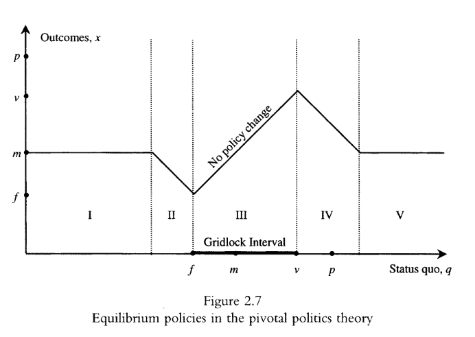
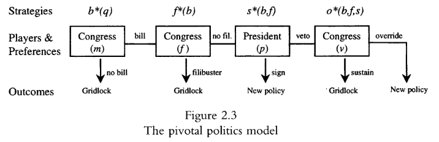

9 Perspectiva informacional pt. 2
10 Krehbiel (1998), chapter 1
In spite of the abundance of excellent descriptions of lawmaking in the United States Congress, however, there seems to be a shortage of good basic theories of lawmaking that incorporate presidential as well as congressional decision making. The objective of this book is to supply a theory that begins to satisfy this demand. (Krehbiel 1998, 3)
Transportation of the term [“gridlock”] into the political arena occurred soon thereafter, as gridlock came to refer to the persistent inability to enact major legislation when majorities on Capitol Hill and/or the president seem to prefer such enactments to the status quo. (Krehbiel 1998, 4)
Because the gridlock may characterize nonpartisan lawmaking as well as lawmaking in highly partisan environments, parties and partisanship should be viewed as hypothetical causes of gridlock rather than defining characteristics of gridlock. (Krehbiel 1998, 4)
[…] although the practical usage of the term is pejorative more often than not, the underlying phenomenon of gridlock is not necessarily a bad thing. Opponents of major policy change in a specific area obviously have an eye for salutary attributes of stalemate. […]. Less obviously, and in a fully nonpartisan vein, gridlock can be viewed as essentially the same thing as policy stability, in which case its normative attributes can be defended in the absence of partisanship and self-interest.
The first basic fact of U.S. lawmaking is that gridlock occurs often but not always. Therefore, a good theory of lawmaking ought to have the property that gridlock is common but not constant. Better yet, a good theory of lawmaking should identify conditions under which gridlock is broken. (Krehbiel 1998, 5)
A minimum sufficient condition for beaking gridlock – that is, for enacting laws – is that simple majorities in the Senate and House vote for a bill and that president signs it. The constitutionally defined minimum winning coalition, then, is small: half the House (plus one), half the Senate (plus one), and the president. Practice departs from this theoretical minimum, however, in significant ways. Winning coalitions are normally much greater than minimum-majority sized, both at the level of roll call votes generally and votes on final passage more specifically. (Krehbiel 1998, 5–6)
A second basic fact of U.S. lawmaking, then, concerns coalition sizes and partisanship. Specifically, a good theory of lawmaking ought to have the property that winning coalitions are bipartisan and greater than minimum-majority sized. Better yet, a good theory of lawmaking should identify covariates of coalition sizes. (Krehbiel 1998, 6)
In the absence of empirical verifications, a theory is only a set of interrelated abstract symbols that may or may not clarify and illuminate real-world behavior and outcomes. In the absence of an explicit theory, well-verified empirical generalizations state what happens, but they offer little insight into why it happens. Either way, the metaphorical glass of scientific discovery is only half full.
In contrast, when theorems in a theory and well-verified generalizations coincide, a major goal of science is attained by the joint contributions of the theoretical and the empirical persuits. The goal is law-like statements. (Krehbiel 1998, 7)
Basic Theories or Schools of Thought:
- Responsible Party Government: tinha a pretensão de ser normativa ou prescritiva, e não positiva ou descriva.
In the traditional normative theory of responsible party government, parties adopt well-defined and differentiated platforms, a unified government is elected, majority party members in government act cohesively to enact and implement the platform, policy outcomes are realized, and this process repeats. (Krehbiel 1998, 8)
- Conditional Party Government
A belief in the significance of parties in the U.S. lawmaking plus a tacit concession about persistent mismatches between normative theories and empirical realities have recently given rise to a distinctively weakened notion of party government – not responsible party government in the traditional and broadest sense but rather conditional party government. This perspective is clearly intended to be descriptive – not normative. In conditional party government theory, the condition for party strength is stated in terms of legilators’ preferences. If the parties’ members have distinctly different preferences across parties but homogeneous preferences within parties, then the majority party is predicted to be sufficiently strong to pass skewed or noncentrist outcomes. (Krehbiel 1998, 9)
- Divided versus Unified Government
- Median Voter Theory
This theory [Median Voter Theory] says that if an odd number of members of a majoritarian voting body (say Congress) can be ordered on an issue space such that their preferences over policies are single-peaked, then the unique equilibrium outcome is that proposal corresponding to the median member’s ideal or most-preferred point.
Application of median voter theory to U.S. lawmaking, gridlock, and coalition sizes is straightforward. Elections can be thought of as exogenous determinants of legislatos’ preferences, which are therefore sometimes called induced preferences. After each election, such preferences may and usually do change. Any time the position of the median legislator changes – as in the case of national partisan tides, for example – the old status quo (the previous-period median legislator’s ideal point) is out of equilibrium. (Krehbiel 1998, 13)
- Majoritarian Chaos: when we cannot predict the outcomes.
- Stability-Inducing Theories
The characteristic inability of chaos theories to yield sharp predictions about collective choice gave rise to another class of formal theories that can be labeled stability-inducing theories. One distinguishing feature of these theories is obvious from the label: they are motivated by the perceived need to identify stable outcomes in analytic settings similar to those in which prior theories show that stable outcomes are not likely to exist. In other words, stability-inducing theories by definition take very seriously the problems of preference aggregation illustrated in Arrow’s theorem (1951), strict sufficient conditions for a core illustrated in Plott’s theorem (1967) and the prospect of endless majority cycling suggested by McKelvey’s theorem (1976).
A second distinguishing feature of stability-inducing theories concerns how the so-called chaos problem is solved. Stability-inducing theories generally assume that some players (committees, more often than not) have special procedure rights, such as agenda setting and gatekeeping powers (Ferejohn 1986), restrictive amendment rules (Weingast 1989), or ex post vetoes (Shepsle and Weingast 1987). Intuitively, when exogenous constraints are imposed on some players’ actions, collective choice behavior and outcomes tend to become more predictable. (Krehbiel 1998, 14)
In summary, the basic need is for a new theory of lawmaking in the United States. The theory should predict that gridlock occurs often but not always, and it should identify testable conditions under which gridlock is broken. The theory should predict the regular formation of bipartisan coalitions of greater than simple-majority size, and it should identify testable conditions under which coalition sizes grow or shrink relative to baseline expectations. Last but not least, the theory should expose and clarify the essential constraints faced by lawmakers in a democratic society. (Krehbiel 1998, 19)
11 Krehbiel (1998), chapter 2
Assumptions in a formal theory are not inteded to be comprehensive and unequivocally true. If they were comprehensive and unequivocally true they would simply restate or describe reality as we know it, and they would be much too complex from which to derive testable propositions about political behavior. Instead, assumptions are intended to satisfy aims that are at once more modest descriptively and more constructive analytically. They should reflect the essence of choice settings with sufficient simplicity that the model itself remains tractable, because a model that cannot be solved is not a data-ready model. What, then, are the essential features of U.S. lawmaking settings? One plausible answer is separation of powers, heterogeneous preferences, and multistage collective choice.
Theoretical results, of course, are derived from assumptions. In light of the discussing in Chapter I, a minimal requirement of an improved theory of lawmaking is that its results comport with two basic facts: gridlock isncommon but not constant, and coalitions are regularly bipartisan and greater than simple-majority sized. A higher standard for results is that they not only comport with these basic facts of U.S. lawmaking but also yield predictions (or interpretations) regarding occasional variation in these approximate constants. More specifically, an improved theory of lawmaking should identify conditions under which gridlock is broken, and it should account for some variation in (usually large) coalition sizes.
Interpretations constitute another class of desirable properties of a useful theory. An improved theory os U.S. lawmaking also should help to account for anomalies or puzzles that are not necessarily empirical motivations underlying the necessarily sparse assumptions of the theory. For example, why do we often have gridlock even in unified governments (Mayhew 1991, 1995)? Why do presidents launch fewer policy initiatives the longer they are in office (Light 1991)? […] To the extent that a new theory can answer questions such as these in addition to providing an explanation for more basic facts, it will have added appeal. (Krehbiel 1998, 20)
11.1 Assumptions
Policy Space: “Collective choice occurs via voting over proposals or policies that can be arranged on a line. That is, the policy space is unidimensional. It is convenient and intuitive to think of the policy space as a continuum on which liberal policies are located on the left, moderate policies are located in the center, and conservative policies are located on the right. Because the policy space is continuous, it is possible to consider policies at any point between liberal and conservative extremes.” (Krehbiel 1998, 21)
Players and Preferences: “Players in the game are generically referred to as lawmakers and include a president and \(n\) legislators in a unicameral legislature. Each player has an ideal point in the policy space, that is, a policy that yields greater benefits to the player than all other policies. Each player’s preferences are single-peaked, meaning that all policies in a given direction farther and farther from an individual’s ideal point are considered, utility for that player never increases. […]. Therefore, for any two policies \(y\) and \(z\) in the policy space, a player always prefers that policy which is closer to his ideal point.” (Krehbiel 1998, 22)
Procedures: “In contrast to generic pure-majority-rule voting models, the capacity of politicians to enact policies in this theory is tempered by two supermajoritarian procedures: the executive veto, and the Senate’s filibuster procedures.” […]. Under configurations of legislative preferences to be specified, the filibuster, too, effectively raises the voting requirement for policy changes. (Krehbiel 1998, 23)
Pivots: “The commonsense [a person or thing on or around which something turns or depends] definition transports well into the pivotal politics modeling framework. The ‘something’ that depends on the pivots in theory is the collective choice, that is, the law. The focus of the modeling exercise is to discern which of \(n\) legislators or the president is pivotal in various lawmaking situations and why.” (Krehbiel 1998, 23)
Sequence of Play
Behavior: “Players in the game are assumed to adopt strategies that maximize their utility, conditional on the expectation that all other players in future stages of the game do likewise. The equilibrium concept is subgame perfect Nash. […]. More formally, an equilibrium is an optimal bill, \(b^*\), which is a function of the exogenous status quo, \(q\), and which is predicated on rational expectations about future behavior; an optimal filibuster choice \(f^*\) which is a function of \(b\) and which is predicated on rational expectations about future behavior; an optimal veto choice \(v^*\) which is a function of \(b\) and \(f\) and which is predicated on rational expectations about future behavior; and an optimal override choice, \(o^*\), which is a function of \(b\), \(f\), and \(v\).” (Krehbiel 1998, 26)
Equilibrium and Gridlock: “One analytical focal point is on the institutional basis for gridlock. To capture not only stalemate in government but also the sense of majority disappointment or injustice that sometimes accompanies it, gridlock is defined as the absence of policy change in equilibrium in spite of the existence of a legislative majority that favours change.” (Krehbiel 1998, 26)
Parties: “No special assumptions are made about the ability of political parties to shape individual lawmakers’ decisions. This, admittedly, is a judgment that is likely to be controversial. The present aim is not to preempt or stifle controversity but rather to clarify the issue so that neutral readers can form independent judgments after a substantial amount of evidence is presented.” (Krehbiel 1998, 26–27)
11.2 Possible results

Full convergence: “Full convergence occurs only when the status quo is extreme relative to the ideal points of the president and pivotal legislators. For status quo points in intervals I or V, the median legislator proposes his ideal point, and this policy is accepted. By construction, intervals I and V denotes status quo policies that both the first-stage proposer (the legislative median voter) and the pivotal actors (the filibuster pivot, and the president or the veto pivot) all regard as undesirable relative to the legislative median.” (Krehbiel 1998, 35–36)
Partial convergence:
Partial convergence toward \(m\) occurs when the status quo lies in interval II. The behavioral intuition is as follows. The median voter again would like full convergence, but he knows that if he were to propose his ideal point \(b = m\), such policy would be defeated via filibuster. By construction, interval II consists exclusively of policies and everyone to her left prefers to \(m\). An optimizing median legislator, therefore, tempers (in this setting, liberalizes) his proposed bill, \(b\), to make the filibuster pivot indifferent between \(b\) and \(q\). Such a proposal has several noteworthy properties. First, it does not elicit a filibuster. Second, neither does it elicit a veto. Third, since it is signed into law it yields a new policy that is closer to the median voter’s ideal point than was the status quo, but not as close as the median voter would like. […].
Partial convergence also occurs when the status quo lies in interval IV. The behavioral dynamics are comparable to those in interval II, except that now the optimal legislative proposal in the first stage is tempered by the preferences of the veto pivot rather than the filibuster pivot. The first-stage proposer knows that the president will veto a bill that is too liberal if such a veto will be sustained by a veto pivot and all legislators to his right. Thus, the optimal proposal is one that makes the veto pivot indifferent between the bill and the status quo. This proposal elicits no veto precisely because such a veto would be overridden. Again, the winning coalition is much larger than a bare majority. (Krehbiel 1998, 37)
Gridlock: “Finally, no convergence occurs in the theory for centrally located status quo points, namely, those in interval III. For any left-of-center status quo in this interval, a moderate-to-conservative legislative majority would like to pass a more conservative policy. It cannot do so, however, because such a proposal would be killed by a liberal filibuster. Analogously, for any right-of-center status quo in this interval, a moderate-to-liberal legislative majority would like to pass a more liberal policy. It cannot do so, however, because such a porposal would be vetoed, and the veto would be sustained.” (Krehbiel 1998, 38)
11.3 Conclusion
The theory of pivotal politics identifies a single, conceptually tidy, necessary and sufficient condition for breaking gridlock. Policy change requires that the status quo must lie outside the gridlock interval, as defined by the president, filibuster, and veto pivots in theory and illustrated in figures 2.7 and 2.8 as interval III. […].
More generally, from the standpoint of the basic facts identified in Chapter I, the pivotal politics theory seems promising. It implies that gridlock is common but not constant, and it identifies the condition under which it will be broken. Furthermore, when gridlock is broken, it is broken by large, bipartisan coalitions – not by minimal-majority or homogeneous majority-party coalitions.
The theory has some bonus features as well. Loosely applied, it serves as a rationalizing device for one of the biggest recent surprises in U.S. politics: unified government gridlock. Also loosely applied, it provides a sort of lens through which we can better envision other regularities: honeymoons, fast starts, and eventual frizzles within presidential terms; intraterm decreases in the number of presidential initiatives; declining presidential popularity; and frustration of moderate legislators. (Krehbiel 1998, 47)
12 Anotações de aula
12.1 Retomando a aula do Acir
Na teoria informacional, existe uma incerteza a respeito de um resultado dada uma policy. A questão informacional é a redução dessa incerteza, porque interessa ao político o outcome.
A diminuição da incerteza é um problema do eleitor mediano. O mediano do Congresso organiza (e organização é uma decisão majoritária e, portanto, uma decisão do eleitor mediano) o legislativo de maneira que haja uma estrutura institucional (por exemplo, um sistema de comisssões) que envie informações para o mediano no plenário. Uma extensão da teoria é pensar que isso é um problema dos atores pivotais.
O mediano está disposto a ter uma perda distributiva (isto é, tomar uma decisão mais ou menos enviesada em relação ao seu ponto ideal) em troca de ganhos de informação. A comissão, é claro, tenta puxar o resultado para algo mais perto das sua preferência (daí a perda distributiva do mediano). O congresso se organiza para tomar decisões que estejam mais “calçadas”, baseadas em informação.
Temos que entender esse esquema na forma de um jogo de sinalização. A comissão envia informação para o plenário e o plenário atualiza suas crenças a respeito de um determinado tema; no entanto, essa atualização deve ser feita de maneira estratégica, já que o mediano entende que a informação é de certa maneira enviesada.
12.2 Brady and Volden (2005)
Em geral os modelos são construídos com a ideia de instituições majoritárias, sendo o mediano o pivô. No entanto, quando olhamos para os legislativos na prática, precisamos levar me conta instituições supermajoritárias – e, nesse caso, o pivô não será o mediano.
Por que para Brady and Volden (2005) é importante marcar que não existe diferença nos impasses entre governos unificados e governos divididos (presidente de um partido e congresso de outro partido)? Para se diferenciar da perspectiva partidária! Se desenvolvo hipóteses, testo e percebo que não há diferenças, a conclusão é que o mecanismo partidário não dá conta de explicar os resultados do ponto de vista da produção de policy.
Qual é a função do choque exógeno? Ele incide sobre a posição relativa do status quo vis a vis os políticos. São esses choques que trazem novos elementos que fazem com que os políticos observem o status quo de uma ou outra maneira.
Conceitos importantes: pivôs (e suas posições), status quo e região de impasse.
Na perspectiva distributivista, o mediano aprova tudo. As coisas já chegam negociadas e ele simplesmente vota pela regra da deferência às comissões.
Sugestão: Mr. Smith goes to Washington
12.3 Krehbiel (1998)
No espaço unidimensional, a maioria é o eleitor mediano. Nos legislativos na prática, precisamos olhar para maiorias qualificadas e o mediano se torna insuficiente – precisamos olhar para pivôs.
O modelo de votação da regra pura da maioria é temperada por dois procedimentos: - veto do poder executivo (demanda 2/3 do legislativo pra ser derrubado) - procedimentos de obstrução no Senado (filibuster – debate da votação pode se estender)
Por conta disso, precisamos sempre ter em mente 4 elementos (pivôs): o presidente, o eleitor mediano, veto pivot e filibuster pivot.
O jogo acontece em 4 estágios, nas quais pode haver gridlock:
